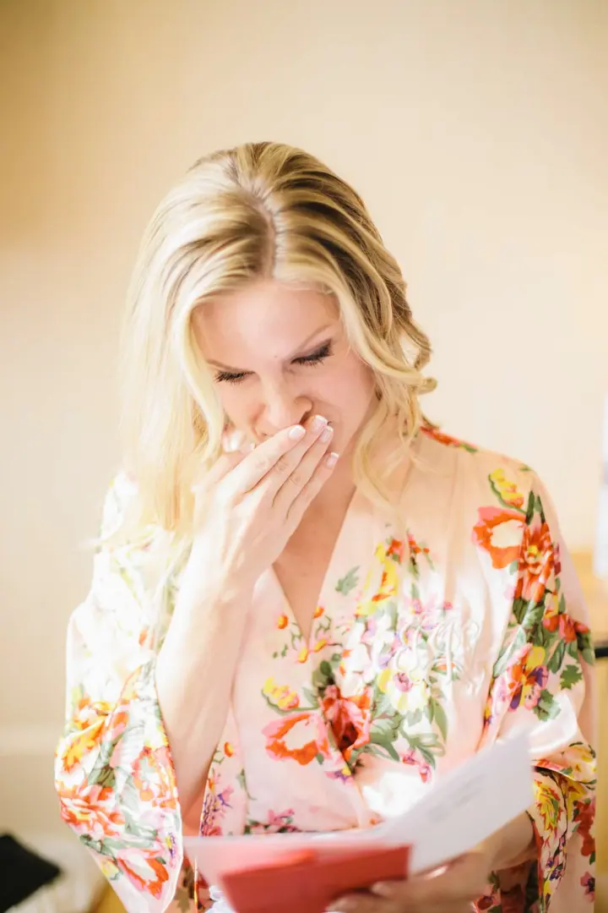
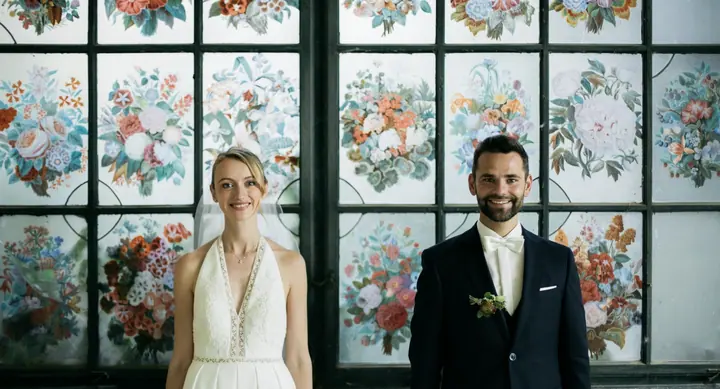

Svatby
Fotím svatby v Praze i kdekoli ve světě. Od ranních příprav přes obřad až po chvíle, kdy už nikdo nepózuje.




Jmenuji se Dmitrij Tkačuk a jsem svatební fotograf z Prahy. Fotím přípravy, obřad i drobné chvíle mezi tím, které si za pár let budete chtít připomenout. Za svatbou rád vyrazím kamkoli, po Česku i do světa.
Více o mně
„Mezinárodní svatební fotograf situovaný v Praze | k dispozici pro celý svět“
— Dmitrij Tkačuk
Fotím svatby v Praze i kdekoli ve světě. Od ranních příprav přes obřad až po chvíle, kdy už nikdo nepózuje.
Společné focení před svatbou, kde se v klidu poznáme a vy si zvyknete na foťák. Klidně na střeše, v ulicích nebo kdekoli, kde se cítíte jako vy.
Fotografie jsou ilustrační
Jsem mezinárodní svatební fotograf a žiju v Praze. Svatby fotím doma i v zahraničí, takže nezáleží na tom, jestli se berete na zámku za městem, nebo v jiné zemi.
Baví mě světlo a detaily, kterých si v ten den skoro nikdo nevšimne: ruce v autě cestou na obřad, nevěsta ve dveřích, slzy nad dopisem při přípravách. Snažím se být nablízku, ale nepřekážet.
Kromě svatebního dne nabízím i předsvatební focení. Poznáme se, vyzkoušíte si, jaké to je být před foťákem, a v den svatby už budeme sehraní.
Napište mi nebo zavolejte a pošlete datum a místo svatby. Dám vám vědět, jestli mám volno.
Probereme, jak si den představujete, co je pro vás důležité a kde se bude co dít.
Když budete chtít, vyrazíme fotit ještě před svatbou. Poznáme se a vy si zvyknete na foťák.
V den svatby jsem s vámi a fotím, jak den plyne. Pak fotky vyberu, upravím a pošlu vám je.
Ano. Sídlím v Praze, ale za svatbou rád přijedu kamkoli v Česku i v zahraničí.
Společné focení před svatbou. Poznáme se, vyzkoušíte si pózování a v den svatby už se před foťákem budete cítit přirozeně.
Napište mi nebo zavolejte s datem a místem svatby. Když mám volno, domluvíme podrobnosti.
Přesný termín odevzdání vám řeknu při domluvě, záleží na sezóně a rozsahu svatby.